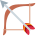

الألف في الأفعال
الدرس 3 من 3 — الإملاء
أُلاحظ
أقرأ الأمثلة وأستمع إليها، وألاحظ الكلمات الملوّنة.
- دَعَا
- مَشَى
- رَمَى
أستنتج
الفعل الناقصبعض الأفعال تنتهي بألف، وبعضها بألف مقصورة تُكتب (ى): دَعَا بألف، ومَشَى بألف مقصورة.

بألف
دَعَا

بألف مقصورة
مَشَى

بألف مقصورة
رَمَى
أُطبّق
1أيّ فعل يُكتب آخره بالألف المقصورة؟
2استمع: أيّ فعل تسمع؟
3«دَعَا» آخره:
إجابات صحيحة من أول محاولة:
أتمرّن أكثر
أستمع، ثمّ أكتب ما أسمع:
أستمع، ثمّ أكتب ما أسمع:
✓ أنهيتَ هذا الدرس
الرسوم: Twemoji (CC-BY 4.0) وFluent Emoji من Microsoft (MIT). الأصوات: صوت عربي اصطناعي.